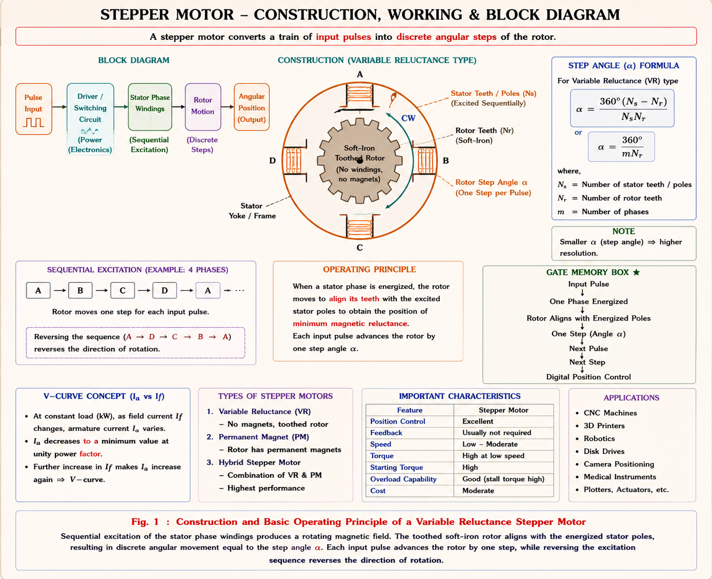
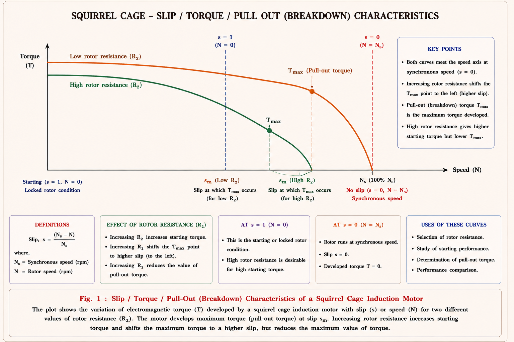
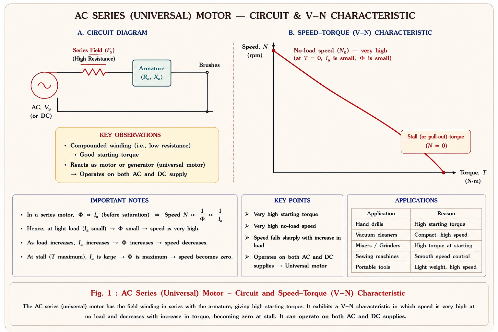
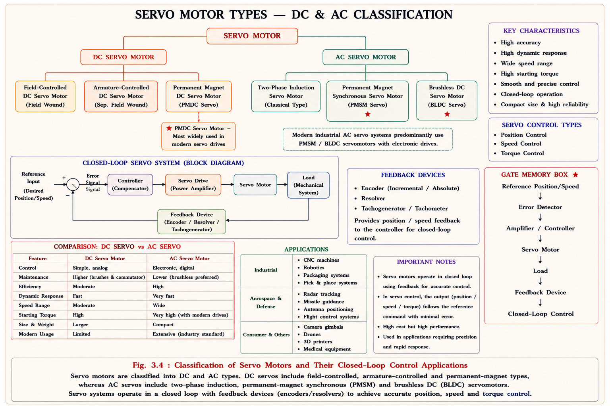
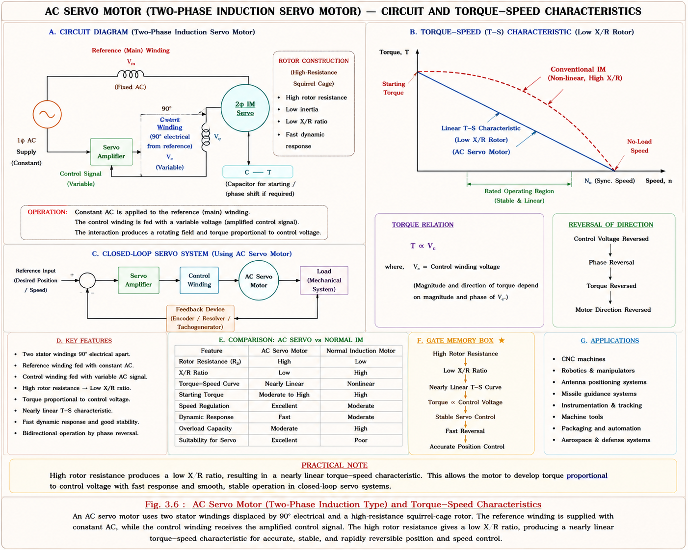

A stepper motor is a special type of synchronous motor that converts digital electrical pulses into precise mechanical angular displacement. Unlike conventional motors designed for continuous rotation, the rotor of a stepper motor rotates in discrete steps, with each pulse from the drive circuit causing the rotor to advance by a fixed angle called the step angle \(\alpha\).[1]
The stator carries a number of poles (Ns) wound with exciting coils, while the rotor is either a permanent magnet type or a variable reluctance type with built-in teeth/poles (Nr). The control electronics supply pulses to the stator phases in a specific switching sequence, and the rotor aligns itself magnetically with the energised stator poles, advancing one step per pulse.

Fig 3.1 — Stepper motor: stator poles excited sequentially, rotor teeth align magnetically with each pulse. Rotor rotates in discrete steps of angle α.
The rotor is not meant for continuous rotation. It reacts to each pulse by moving exactly one step angle in mechanical degrees, as determined by the drive circuit switching sequence. The torque developed is called holding torque (when a step is completed and current maintained) and detent torque (for permanent magnet type, even without excitation).
3.2
Step Angle — Formula & Derivation
The step angle α defines the angular displacement of the rotor for each input pulse. It is the fundamental parameter that determines the resolution and accuracy of a stepper motor. Two equivalent formulae are used depending on what data is available:[2]
Step Angle Formulae (Mechanical Degrees)
Formula 1 — From stator & rotor pole numbers:
\(\alpha = \frac{N_s - N_r}{N_s \cdot N_r} \times 360^\circ\)
where: \(N_s\) = No. of stator poles
\(N_r\) = No. of rotor teeth / poles
\(\alpha\) = Step angle in mechanical degrees
Formula 2 — From no. of phases & rotor teeth:
\(\alpha = \frac{360^\circ}{m \times N_r}\)
where: \(m\) = No. of stator phases (switching steps per revolution cycle)
\(N_r\) = No. of rotor teeth
Relationship between formulae:
\(m \approx \frac{N_s}{N_r}\) (depends on winding configuration)
Steps per revolution:
\(N_{\text{steps}} = \frac{360^\circ}{\alpha}\)
⚠️
Slew Range — High Frequency Instability
When the stepping frequency (pulse rate) is very high — i.e., pulses are given rapidly (micro-stepping) — the rotor cannot respond to individual pulses due to its mechanical inertia. The rotor overshoots and becomes uncontrollable. This region of uncontrolled rotation is called the slew range. In the slew range, the motor may lose steps, stall, or exhibit oscillatory behaviour. The designer must always specify the maximum pull-in and pull-out frequencies to avoid the slew range in critical position control systems.[1]
EX 1Calculate step angle for a 3-phase stepper motor with Nr = 50 rotor teeth
A 3-phase variable reluctance stepper motor has 50 rotor teeth. Find: (a) step angle, (b) steps per revolution, (c) angular resolution.
Solution
Given: \(m = 3\) phases, \(N_r = 50\) rotor teeth
(a) Step angle:
\(\alpha = \frac{360^\circ}{m \times N_r}\)
\(\alpha = \frac{360^\circ}{3 \times 50}\)
\(\alpha =\) \(2.4^\circ\) per step
(b) Steps per revolution:
\(N_{\text{steps}} = \frac{360^\circ}{\alpha} = \frac{360^\circ}{2.4^\circ}\)
\(N_{\text{steps}} =\) \(150\) steps per revolution
(c) Angular resolution:
The motor can position the load to within \(\pm 1.2^\circ\) (half a step)
Resolution = \(2.4^\circ\) (1 step = \(2.4^\circ\) increments)
Note: For micro-stepping at half-step mode:
Effective \(\alpha = 1.2^\circ\), \(N_{\text{steps}} = 300\) per revolution
EX 2Step angle using Ns–Nr formula
A stepper motor has Ns = 8 stator poles and Nr = 6 rotor teeth. Find the step angle.
Stepper motors are designed in three principal configurations, each suited to different requirements of torque, step resolution, and damping behaviour.
Permanent Magnet (PM) Type
→Rotor is a permanent magnet (no teeth)
→Higher torque output than VR type
→Detent torque present even without excitation
→Step angles typically 7.5° to 90°
→Better damping characteristics
→Used in printers, disk drives, clocks
Variable Reluctance (VR) Type
→Rotor is soft iron with multiple teeth
→Rotor aligns to minimise reluctance path
→No detent torque (deenergised = free spin)
→Lighter weight, faster response
→Step angles as small as 1.8°
→Used in computer peripherals, instruments
Hybrid Type (PM + VR)
→Combines PM and VR construction
→Best accuracy and torque
→Step angles: 0.9° to 3.6°
→Most widely used industrial type
→Higher cost than VR or PM alone
→Used in CNC, robotics, medical devices
Key Characteristics
→Power range: <1 W to few Watts
→No feedback required (open-loop control)
→Highly repeatable positioning
→Step error accumulates — no self-correction
→Popular & widely available standard product
Applications of Stepper Motors
⚡
Stepper Motor Application Areas
Because of their small power range (less than 1W to a few Watts), precise step positioning, and digital compatibility, stepper motors are found in: timing devices (clocks), printers and type-writers, fax machines, computer disk drives and head positioning, computer-controlled machine tools (CNC), and robotics joints and grippers. They are the preferred actuator wherever open-loop digital position control is required without encoders.

Fig 3.2 — Stepper motor torque-frequency characteristic. The slew range (between pull-in and pull-out frequencies) is the instability region where inertia causes missed steps.
AC Series / Universal Motor — Construction & Characteristics
When a single-phase AC supply is applied across a DC series motor, the motor continues to run because the torque is always positive in both half-cycles — both field current and armature current reverse simultaneously, keeping torque in the same direction. However, the torque is pulsating (not uniform) and the motor produces more noise than a pure DC series motor.[3]
A standard DC series motor cannot be used directly on AC because of problems arising from AC operation. Hence, specially designed AC series motors (also called Universal motors) are built with specific modifications to overcome these limitations.
Design Modifications for AC Operation
⚙️
Why DC Series Motors Need Modification for AC
On AC, the alternating flux creates eddy currents in solid iron cores, reactance in field coils increases impedance, armature reaction worsens commutation due to high reactance voltage in commutating coils, and sparking at brushes becomes severe. Each of these issues requires a specific constructional modification for successful AC operation.
Modification 1 — Core Lamination
→Stator and rotor use high-grade Si-steel laminations
→Thin laminations (0.3–0.5 mm) reduce eddy current loss
→Not needed in DC motors (only rotor was laminated)
→AC flux induces eddy currents in both stator and rotor cores
Modification 2 — Reduced Field Turns
→Field winding turns are comparatively reduced
→Reduces inductive reactance (\(X = \omega L\)) of field coils
→Improves power factor and reduces voltage drop
→Compensating winding may be added to maintain flux
Modification 3 — Commutation Problem
→Armature reaction + AC reactance voltage → commutation fails
→High reactance in armature coils causes commutation difficulty
→Compensated winding used for large ratings
→High-resistance brushes used to limit short-circuit current
→Brush position adjusted carefully for minimum sparking zone

Fig 3.3 — Universal motor circuit (left): field winding, laminated armature, brushes, optional compensating winding. Speed-torque curve (right): steep series characteristic — never run on no-load.
These motors are popular especially for ratings less than 1 kW because of their high speed (5000–20000 rpm) and high torque within a compact size. Due to pulsation in torque (arising from the AC nature of the supply), they produce more noise than DC series motors.
Key Characteristics
→Runs on both AC and DC (hence "Universal")
→Speed range: 5000–20,000 rpm
→Pulsating torque → more noise
→High starting torque (series characteristic)
→Dangerous overspeed at no-load
→Popular below 1 kW ratings
Applications
→Food processors — mixers, juicers
→Vacuum cleaners
→Portable hand tools — drills, wood saws
→Sewing machines
→Automatic washing machines (recent)
→Traction (~500 HP, 25 Hz grid — rare)
💡
Traction Application — 25 Hz Grid
AC series motors of high rating around 500 HP are used for some traction purposes. However, they operate with a reduced grid frequency of 25 Hz only (not the standard 50/60 Hz). This reduced frequency significantly decreases the reactance in the armature and field coils, allowing better commutation and higher efficiency at the cost of a specialised supply infrastructure.
3.5
Servo Motors — DC & AC Types
A servo motor is a motor used in a servo mechanism, which is an automatic closed-loop control system. The servo mechanism continuously monitors the output (position, speed, or torque) and compares it with a desired reference value. Any error between the reference and actual output is used to correct the motor drive signal.[1]

Fig 3.4 — Servo motor classification: DC types (field-controlled, armature-controlled, PM) and AC types (2φ IM, 1φ capacitor-run IM). PM armature-controlled is the most popular DC servo type.
Fig 3.5 — DC servo motor control: field controlled (left) uses variable field excitation with constant armature voltage; armature controlled (right, faster response) uses variable armature voltage with constant field.
Basis: Nagrath & Kothari [2], §11.4
⚡
Armature Control vs Field Control — Key Comparison
Armature-controlled servo mechanisms are fast-acting because the electrical time constant of the armature circuit is much smaller than the field circuit's time constant. Armature-controlled permanent magnet DC servo motors are the most popular type for precision servo applications due to their simple and compact design, high efficiency, and the fact that they require no field winding excitation (field is always present from the permanent magnet).[2]
AC Servo Motors
AC servo motors are basically single-phase induction motors of the capacitor-run type. They use a two-phase rotating magnetic field to produce torque. For quick response, the rotor diameters are kept small and the axial length is increased — a high aspect ratio rotor. Compared to conventional induction motors, the X/R ratio of the rotor is kept low to obtain a linear Torque-Speed (T-S) characteristic for effective and stable control response.[3]

Fig 3.6 — AC servo motor: 1φ capacitor-run type (left circuit). Low X/R rotor gives linear T-S characteristic (right) needed for stable servo control, unlike conventional IM with non-linear peak torque curve.
GATE EE 2015Step angle of stepper motor — 3-phase, 50 rotor teeth1 Mark
A 3-phase variable reluctance stepper motor has 50 rotor teeth. The step angle is:
(A) 1.8°
(B) 3.0°
✓ (C) 2.4°
(D) 7.5°
✏️
Solution
\(\alpha = \frac{360^\circ}{m \times N_r} = \frac{360^\circ}{3 \times 50} = \mathbf{2.4^\circ}\). For \(m=3\) phases, \(N_r=50\) teeth. Note: \(\alpha=1.8^\circ\) corresponds to \(m=4\) (4-phase), \(N_r=50\) which is different configuration.
GATE EE 2018Stepper motor — steps per revolution1 Mark
A stepper motor has a step angle of 1.8°. The number of steps required to complete one full revolution is:
(A) 100
(B) 150
✓ (C) 200
(D) 360
✏️
Solution
Steps per revolution = \(\frac{360^\circ}{\alpha} = \frac{360^\circ}{1.8^\circ} = \mathbf{200 \text{ steps}}\). This is the standard NEMA standard stepper (4-phase, 50-tooth rotor → \(\alpha = \frac{360^\circ}{4 \times 50} = 1.8^\circ\)).
GATE EE 2019Universal motor — why it runs on AC1 Mark
A DC series motor when connected to a single-phase AC supply runs because:
(A) AC reverses only the armature current, so torque is unidirectional
✓ (B) AC reverses both field and armature currents simultaneously, so the product (flux × armature current) remains positive in both half-cycles — giving positive unidirectional average torque
(C) The commutator rectifies the AC supply internally
(D) AC causes rotating magnetic field inside the DC motor
✏️
Solution
Torque \(T \propto \Phi \times I_a\). On AC, both \(\Phi\) and \(I_a\) reverse together (in-phase for series motor). So \(T \propto (-\Phi)(-I_a) = +\Phi I_a\) — torque remains positive. The torque is pulsating (twice supply frequency) but average is positive, so rotation is sustained.
IES E&T 2013AC series motor — modifications needed over DC series2 Marks
Which of the following modifications are made in an AC series motor compared to a standard DC series motor?
(A) Only the armature is laminated to reduce eddy currents
✓ (B) Both stator and rotor are laminated with Si-steel; field turns are reduced; compensating winding added for large ratings to handle commutation and sparking issues
(C) Only the field turns are reduced; no lamination is needed
(D) The commutator is replaced with slip rings
✏️
Solution
All four modifications: (1) Si-steel laminations in both stator and rotor, (2) reduced field turns, (3) compensating winding for large ratings, (4) high-resistance brushes — are required. DC motors only have rotor laminated; AC operation requires stator lamination too.
IES E&T 2016DC servo motor — why armature control is preferred1 Mark
Armature-controlled DC servo motors are preferred over field-controlled DC servo motors in high-performance servo systems because:
(A) Armature has a larger time constant, giving more stability
✓ (B) Armature has a smaller electrical time constant (\(\tau_a = L_a/R_a\)) than the field (\(\tau_f = L_f/R_f\)), making the armature-controlled system faster-acting and more responsive
(C) Field-controlled motors cannot operate at variable speed
(D) Armature control requires no amplifier
✏️
Solution
Time constant \(\tau = L/R\). Field inductance \(L_f \gg\) armature inductance \(L_a\) (field has many more turns in a high-inductance core), so \(\tau_f \gg \tau_a\). Armature responds faster. Hence armature-controlled servo is fast-acting and preferred for precision control loops.
IES E&T 2017AC servo motor — rotor design requirement1 Mark
In an AC servo motor, the rotor is designed with low X/R ratio. The primary purpose of this design choice is:
(A) To increase the starting torque
(B) To reduce rotor copper losses
✓ (C) To obtain a linear (monotonically decreasing) Torque-Speed characteristic, which is necessary for stable and controllable servo operation
(D) To achieve higher synchronous speed
✏️
Solution
Conventional IM has a non-linear T-S curve with a peak (pull-out torque). Low X/R rotor shifts the peak torque to synchronous speed, making the T-S curve linear throughout the operating range. A linear characteristic is essential for stable closed-loop servo control with predictable gain.
CONCEPT 1Stepper vs Servo vs Universal — Complete Comparison Table
STEPPER MOTOR:
Step angle: \(\alpha = \frac{360^\circ}{m \times N_r}\) [most used]
Step angle: \(\alpha = \frac{N_s - N_r}{N_s \cdot N_r} \times 360^\circ\)
Steps/revolution: \(N_{\text{steps}} = \frac{360^\circ}{\alpha}\)
Rotor speed: \(n = f_{\text{pulse}} \times \alpha\) (mech. deg/s → convert to rpm)
Slew range: \(f > f_{\text{pull-in}}\) → motor may miss steps
UNIVERSAL / AC SERIES MOTOR:
Torque: \(T = K \cdot \Phi \cdot I_a\) (pulsating on AC, average is +ve)
Both half cycles: \(\Phi\) and \(I_a\) reverse simultaneously → \(T\) always positive
Modifications: Laminated stator+rotor, reduced field turns, compensated wdg
Traction version: Uses 25 Hz supply (not 50/60 Hz)
DC SERVO MOTOR (Armature Controlled):
Back-EMF: \(E_b = K_a \cdot \Phi \cdot \omega\)
Torque: \(T = K_t \cdot \Phi \cdot I_a\)
Arma time const: \(\tau_a = \frac{L_a}{R_a}\) (small → fast response)
Field time const: \(\tau_f = \frac{L_f}{R_f}\) (large → slow → field ctrl not preferred)
PM servo: No field winding → simplest, most efficient
AC SERVO MOTOR:
Type: 1φ capacitor-run IM (2-phase in operation)
Rotor X/R: low X/R → linear T-S characteristic
Rotor geometry: Small diameter, high axial length → low inertia → fast response
Characteristic: Stable operation requires T-S to be monotonically decreasing
🤖 Ask Aarova AI — Deepen Your Understanding
Have a question on stepper motors, universal motors, or servo control? Type below or tap a suggestion.
Stepper motor step angle calcUniversal motor AC torqueServo control comparisonAC servo motor X/R ratioSlew range explanation
Chapter Summary
Stepper Motor
Open-loop digital control. Step angle \(\alpha = \frac{360^\circ}{m \cdot N_r}\). Types: PM, VR, Hybrid. Slew range = high-freq instability. Applications: printers, CNC, robotics, clocks. Power: <1W to few Watts.
Step Angle Formula
\(\alpha = \frac{360^\circ}{m \times N_r}\) — primary formula. OR \(\alpha = \frac{N_s-N_r}{N_s \cdot N_r} \times 360^\circ\). Steps/rev = \(\frac{360^\circ}{\alpha}\). PM type has detent torque; VR type has none.
Universal / AC Series
Both \(\Phi\) and \(I_a\) reverse → \(T\) always positive (pulsating). Modifications: Si-steel laminations both stator+rotor, reduced field turns, compensated wdg (large ratings), high-R brushes. 5000–20000 rpm. <1 kW popular.
DC Servo Motor
Closed-loop servo mechanism. Armature control: fast (\(\tau_a = L_a/R_a\) small). Field control: slow (\(\tau_f\) large). PM armature-controlled = most popular — no field excitation needed, compact, efficient.
AC Servo Motor
Basically 1φ capacitor-run IM. Small rotor diameter, large axial length → low inertia. Low X/R rotor → linear T-S characteristic needed for stable servo control. 2-phase operation.
All technical content derived from standard textbooks. No content reproduced verbatim — all explanations, examples, and diagrams are original to Aarova AI.
[1]Chapman, Stephen J. Electric Machinery Fundamentals, 5th ed. McGraw-Hill, 2012. Chapter 10, §10.2–10.5: Universal motor, stepper motor, servo motors, AC servo motors.
[2]Kothari, D.P. and Nagrath, I.J. Electric Machines, 4th ed. Tata McGraw-Hill, 2010. Chapter 11, §11.2–11.4: AC series motor modifications, stepper motors — types and step angle, servo motor — DC and AC, PM servo motors.
[3]Fitzgerald, A.E., Kingsley, C. and Umans, S.D. Electric Machinery, 6th ed. McGraw-Hill, 2003. Chapter 10: Special-purpose electric motors — AC series, stepper, servo principles and characteristics.
[4]IIT Kharagpur NPTEL. Basic Electrical Technology — Lecture Series on Special Machines. National Programme on Technology Enhanced Learning. nptel.ac.in. Covers stepper motor types, step angle derivations, servo motor transfer functions, universal motor commutation.